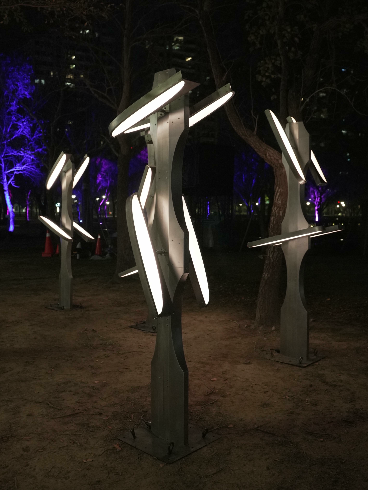

PORTFOLIO 2019 — 2026
HAOMIN黃浩旻 / Hao-Min Huang
互動、動力裝置與多媒體藝術。
探索視覺、體感與空間認知的關係。
精選作品 Selected works
全部作品 →
關於創作 Practice
1997年生於台灣，畢業於國立清華大學科技藝術研究所，互動、裝置、多媒體創作者。由跨領域環境接觸新媒體藝術，喜歡創意編程與裝置藝術的作品，嘗試以虛擬實境與動力裝置交互的方法進行創作，討論視覺、體感與空間認知關係，並延伸為對自身生命狀態的提問。亦有裝置介入聲音裝置的嘗試，希望展現出有別於一般的聲音演出形式。基於自造者運動與創作的方式，常以改造科技物和多材料並置的手法進行實驗和創作，培養對事物審視並再設計的獨特能力，展現出自己認為的可能性。
閱讀簡介與 CV →